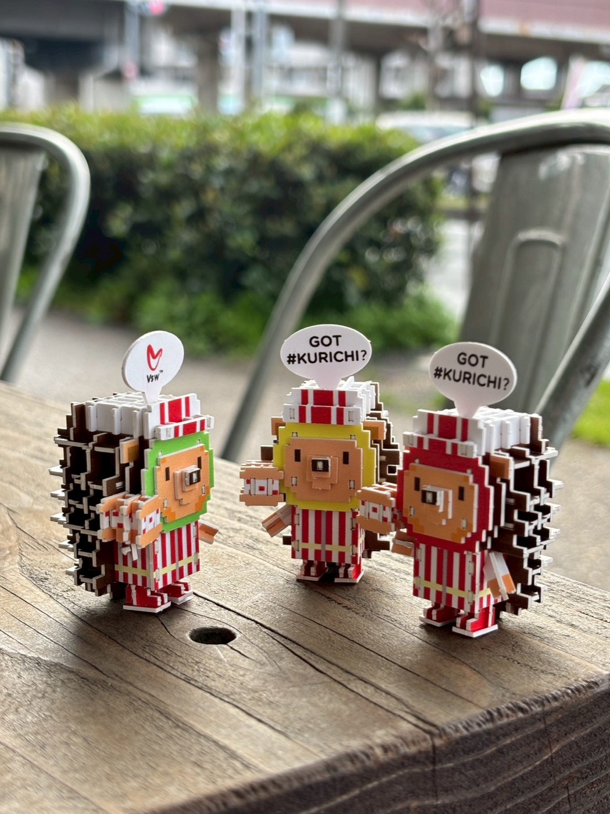
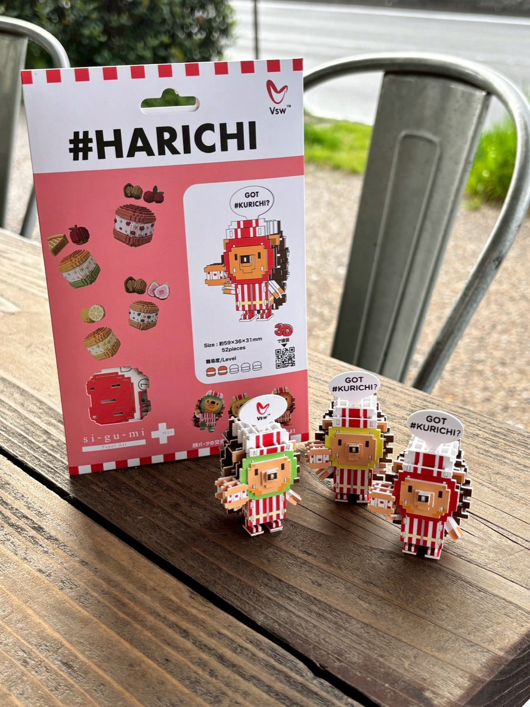
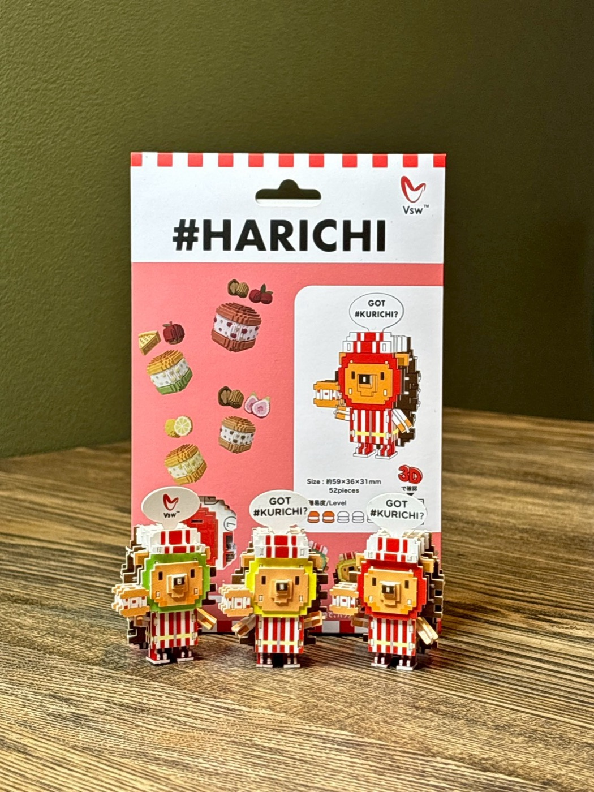

🎉 ハリチくん組み立て玩具『#HARICHI』ついに発売！ shi-gu-mi＋ × #クリチ

🍔 #クリチのマスコットが、紙のフィギュアになりました
こんにちは、Vsw株式会社です！
このたび、NY発・大阪生まれのクリームチーズバーガー「#クリチ」のマスコットキャラクター 「ハリチくん」 が、紙で組み立てる立体フィギュアになって新発売となりました🎉
手がけてくださったのは、ペーパーアート玩具ブランド「shi-gu-mi＋（シグミプラス）」を展開する株式会社エーゾーンさん。ハリチくんの世界観を、一枚の紙から立ち上がる"触れる体験"に変えてくれました。
"パンでもアイスでもない、新感覚スイーツバーガー #クリチ" — その相棒、ハリチくんを、今度はあなたの指先で組み立ててください。

✨ 『#HARICHI（ハリチくん）』の特徴
① カッターも接着剤もいらない
紙パーツにはすべてミシン目が入っていて、指で押し出してはめ込むだけ。ハサミもカッターも接着剤もいりません。だから小さなお子さんと一緒でも安心。机の上と少しの集中時間さえあれば、誰でも組み立てられます。
② 顔パーツを差し替えると色が変わる
ハリチくん最大の魅力が、「顔パーツの交換で全体の色が変わる」仕掛け。赤・黄・緑の3色分の顔パーツが1箱に入っていて、気分や並べ方で"同じ体にちがう顔"を着替えさせられます。１箱で何体分も遊べる、盛りだくさんの構成です。


③ NY × 大阪 × 紙のクラフト
赤×白のストライプユニフォームは、NYのホットドッグ屋台からインスパイア。それを大阪発のクリームチーズカルチャーと掛け合わせ、日本の紙文化「組子」の精神で仕上げた、VSW らしいデザインに仕上がりました。
📦 商品情報
shi-gu-mix #KURICHI ハリチくん 組み立てフィギュア
- サイズ
- 約 59 × 36 × 31 mm
- ピース数
- 52 ピース
- 難易度
- LEVEL 2 / 5（バーガー2個分）
- 対象年齢
- 15 才以上
- 素材
- 紙
- 価格
- ¥1,650（税込）
- 製造
- 株式会社エーゾーン（Azone Co., Ltd.）
- JAN コード
- 4580423515832
- 備考
- Designed in Japan / Made in China

🛒 ご購入はこちらから
公式オンラインショップ、または商品紹介ページからご購入いただけます。
組み立て済みのハリチくんを3Dで360°回転プレビューできる特設ページもぜひチェックしてみてください👇
📷 ハリチくんの日常を追いかける
ハリチくん専用のInstagramアカウント @harichi_kurichiland では、完成したハリチくんたちが街や#クリチと一緒に過ごす日常を配信中。
組み立てReel・撮影カット・新作情報はこちらから👇
📷 Instagram：@harichi_kurichiland →
📸 #ハリチくん でシェア募集中
完成させたハリチくんの写真や動画を、ハッシュタグ #ハリチくん #HARICHI #クリチ #KURICHI でSNS投稿していただけるととっても嬉しいです！素敵な投稿は公式アカウントでご紹介させていただきます🙌
皆さまの応援、いつもありがとうございます。
これからもVsw / #クリチ / #ハリチ をよろしくお願いいたします 🍔💛🧸